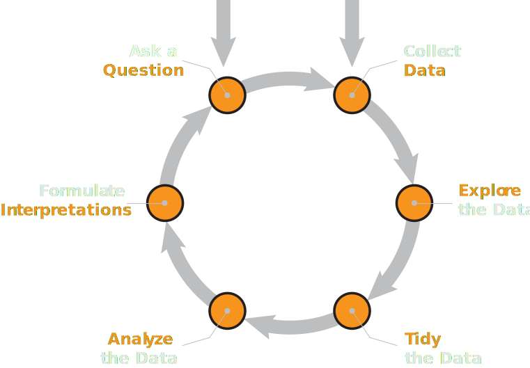
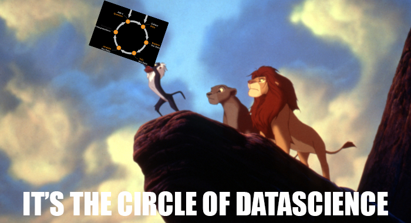

Lecture 02
Data, Part II
\[ \newcommand\R{\mathbb{R}} \newcommand{\N}{\mathbb{N}} \newcommand{\E}{\mathbb{E}} \newcommand{\Prob}{\mathbb{P}} \newcommand{\F}{\mathcal{F}} \newcommand{\1}{1\!\!1} \newcommand{\comp}[1]{#1^{\complement}} \newcommand{\Var}{\mathrm{Var}} \newcommand{\SD}{\mathrm{SD}} \newcommand{\vect}[1]{\vec{\boldsymbol{#1}}} \newcommand{\Cov}{\mathrm{Cov}} \usepackage[makeroom]{cancel} \newcommand{\iid}{\stackrel{\mathrm{i.i.d.}}{\sim}} \newcommand{\Lik}{\mathcal{L}} \DeclareMathOperator*{\argmax}{\mathrm{arg max}} \]
Recap
Data can be thought of as a list of values.
These values are observations on observational units, of a series of variables.
The semantics of data are the meanings behind the values.
The structure of data is how the values are arranged and displayed.
Variables can be classified into numerical and categorical (aka quantatiative and qualitative).
- Numerical data can be subdivided into discrete and continuous; categorical data can be subdivided into ordinal and nominal.
Leadup
Today, we’ll talk extensively about the structure of data.
First, I’d like to further motivate our discussion of data science by introducing the so-called data science lifecycle.
There are many variations of the data science lifecycle (DSLC).
The Data Science Lifecycle

The Data Science Lifecycle
The exact steps aren’t all that important.
Rather, the main idea conveyed by the data science lifecycle is a cycle; that is, an iterative process through which progress is made.
Two main entry points: with a question or with a dataset.
When you start with a question, it is up to you to find an appropriate dataset (or collection of datasets) to answer your question.
When you start with a dataset, you will (ultimately) need to figure out what sorts of questions it be used to can answer.
The Data Science Lifecycle
- Regardless of whether you start with a dataset or a question, you will likely need to, after exploration and analysis, revise your question and/or find new datasets.

- Eventually, you will reach a point where you can put your thoughts and findings together in the form of a coherent report (or presentation), at which point you report your findings and break out of the cycle.
Leadup
Okay, let’s talk a bit about data structure.
Since data consists of observations on one or more variables, it is very common to store data in a tabular format.
To help ground our discussion, let’s consider the
AirPassengersdataset (which is one of the built-in datasets inR).- This dataset contains observations on the monthly totals of international airline passengers between the years of 1949 and 1960, inclusive.
AirPassengers
AirPassengers %>% pander()| Jan | Feb | Mar | Apr | May | Jun | Jul | Aug | Sep | Oct | Nov | Dec | |
|---|---|---|---|---|---|---|---|---|---|---|---|---|
| 1949 | 112 | 118 | 132 | 129 | 121 | 135 | 148 | 148 | 136 | 119 | 104 | 118 |
| 1950 | 115 | 126 | 141 | 135 | 125 | 149 | 170 | 170 | 158 | 133 | 114 | 140 |
| 1951 | 145 | 150 | 178 | 163 | 172 | 178 | 199 | 199 | 184 | 162 | 146 | 166 |
| 1952 | 171 | 180 | 193 | 181 | 183 | 218 | 230 | 242 | 209 | 191 | 172 | 194 |
| 1953 | 196 | 196 | 236 | 235 | 229 | 243 | 264 | 272 | 237 | 211 | 180 | 201 |
| 1954 | 204 | 188 | 235 | 227 | 234 | 264 | 302 | 293 | 259 | 229 | 203 | 229 |
| 1955 | 242 | 233 | 267 | 269 | 270 | 315 | 364 | 347 | 312 | 274 | 237 | 278 |
| 1956 | 284 | 277 | 317 | 313 | 318 | 374 | 413 | 405 | 355 | 306 | 271 | 306 |
| 1957 | 315 | 301 | 356 | 348 | 355 | 422 | 465 | 467 | 404 | 347 | 305 | 336 |
| 1958 | 340 | 318 | 362 | 348 | 363 | 435 | 491 | 505 | 404 | 359 | 310 | 337 |
| 1959 | 360 | 342 | 406 | 396 | 420 | 472 | 548 | 559 | 463 | 407 | 362 | 405 |
| 1960 | 417 | 391 | 419 | 461 | 472 | 535 | 622 | 606 | 508 | 461 | 390 | 432 |
AirPassengers
| yrs | mnths | value |
|---|---|---|
| 1949 | Jan | 112 |
| 1949 | Feb | 118 |
| 1949 | Mar | 132 |
| 1949 | Apr | 129 |
| 1949 | May | 121 |
| 1949 | Jun | 135 |
| 1949 | Jul | 148 |
| 1949 | Aug | 148 |
| 1949 | Sep | 136 |
| 1949 | Oct | 119 |
| 1949 | Nov | 104 |
| 1949 | Dec | 118 |
| 1950 | Jan | 115 |
| 1950 | Feb | 126 |
| 1950 | Mar | 141 |
| 1950 | Apr | 135 |
| 1950 | May | 125 |
| 1950 | Jun | 149 |
| 1950 | Jul | 170 |
| 1950 | Aug | 170 |
| 1950 | Sep | 158 |
| 1950 | Oct | 133 |
| 1950 | Nov | 114 |
| 1950 | Dec | 140 |
| 1951 | Jan | 145 |
| 1951 | Feb | 150 |
| 1951 | Mar | 178 |
| 1951 | Apr | 163 |
| 1951 | May | 172 |
| 1951 | Jun | 178 |
| 1951 | Jul | 199 |
| 1951 | Aug | 199 |
| 1951 | Sep | 184 |
| 1951 | Oct | 162 |
| 1951 | Nov | 146 |
| 1951 | Dec | 166 |
| 1952 | Jan | 171 |
| 1952 | Feb | 180 |
| 1952 | Mar | 193 |
| 1952 | Apr | 181 |
| 1952 | May | 183 |
| 1952 | Jun | 218 |
| 1952 | Jul | 230 |
| 1952 | Aug | 242 |
| 1952 | Sep | 209 |
| 1952 | Oct | 191 |
| 1952 | Nov | 172 |
| 1952 | Dec | 194 |
| 1953 | Jan | 196 |
| 1953 | Feb | 196 |
| 1953 | Mar | 236 |
| 1953 | Apr | 235 |
| 1953 | May | 229 |
| 1953 | Jun | 243 |
| 1953 | Jul | 264 |
| 1953 | Aug | 272 |
| 1953 | Sep | 237 |
| 1953 | Oct | 211 |
| 1953 | Nov | 180 |
| 1953 | Dec | 201 |
| 1954 | Jan | 204 |
| 1954 | Feb | 188 |
| 1954 | Mar | 235 |
| 1954 | Apr | 227 |
| 1954 | May | 234 |
| 1954 | Jun | 264 |
| 1954 | Jul | 302 |
| 1954 | Aug | 293 |
| 1954 | Sep | 259 |
| 1954 | Oct | 229 |
| 1954 | Nov | 203 |
| 1954 | Dec | 229 |
| 1955 | Jan | 242 |
| 1955 | Feb | 233 |
| 1955 | Mar | 267 |
| 1955 | Apr | 269 |
| 1955 | May | 270 |
| 1955 | Jun | 315 |
| 1955 | Jul | 364 |
| 1955 | Aug | 347 |
| 1955 | Sep | 312 |
| 1955 | Oct | 274 |
| 1955 | Nov | 237 |
| 1955 | Dec | 278 |
| 1956 | Jan | 284 |
| 1956 | Feb | 277 |
| 1956 | Mar | 317 |
| 1956 | Apr | 313 |
| 1956 | May | 318 |
| 1956 | Jun | 374 |
| 1956 | Jul | 413 |
| 1956 | Aug | 405 |
| 1956 | Sep | 355 |
| 1956 | Oct | 306 |
| 1956 | Nov | 271 |
| 1956 | Dec | 306 |
| 1957 | Jan | 315 |
| 1957 | Feb | 301 |
| 1957 | Mar | 356 |
| 1957 | Apr | 348 |
| 1957 | May | 355 |
| 1957 | Jun | 422 |
| 1957 | Jul | 465 |
| 1957 | Aug | 467 |
| 1957 | Sep | 404 |
| 1957 | Oct | 347 |
| 1957 | Nov | 305 |
| 1957 | Dec | 336 |
| 1958 | Jan | 340 |
| 1958 | Feb | 318 |
| 1958 | Mar | 362 |
| 1958 | Apr | 348 |
| 1958 | May | 363 |
| 1958 | Jun | 435 |
| 1958 | Jul | 491 |
| 1958 | Aug | 505 |
| 1958 | Sep | 404 |
| 1958 | Oct | 359 |
| 1958 | Nov | 310 |
| 1958 | Dec | 337 |
| 1959 | Jan | 360 |
| 1959 | Feb | 342 |
| 1959 | Mar | 406 |
| 1959 | Apr | 396 |
| 1959 | May | 420 |
| 1959 | Jun | 472 |
| 1959 | Jul | 548 |
| 1959 | Aug | 559 |
| 1959 | Sep | 463 |
| 1959 | Oct | 407 |
| 1959 | Nov | 362 |
| 1959 | Dec | 405 |
| 1960 | Jan | 417 |
| 1960 | Feb | 391 |
| 1960 | Mar | 419 |
| 1960 | Apr | 461 |
| 1960 | May | 472 |
| 1960 | Jun | 535 |
| 1960 | Jul | 622 |
| 1960 | Aug | 606 |
| 1960 | Sep | 508 |
| 1960 | Oct | 461 |
| 1960 | Nov | 390 |
| 1960 | Dec | 432 |
- Same data as before… right?
AirPassengers
Well, same data semantics, right?
Let’s explicitly state the values, variables, and observations.
- There are 144 observations; one for each month between January 1949 and December 1960
- There are two variables: months (which takes values in the set {
Jan,Feb, …,Nov,Dec}) and years (which takes values in the set {1949, 1950, …, 1959, 1960}).
The second way of expressing the
AirPassengersdataset makes the variables a little more clear.
Leadup
We will return to this dataset in a bit.
For now, I just wanted to point out that there are potentially many different ways to structure the same dataset.
As one might imagine, this can lead to problems!
It would be nice to have a system/standard which we could use to make different sets more comparable. Thankfully, such a system exists: